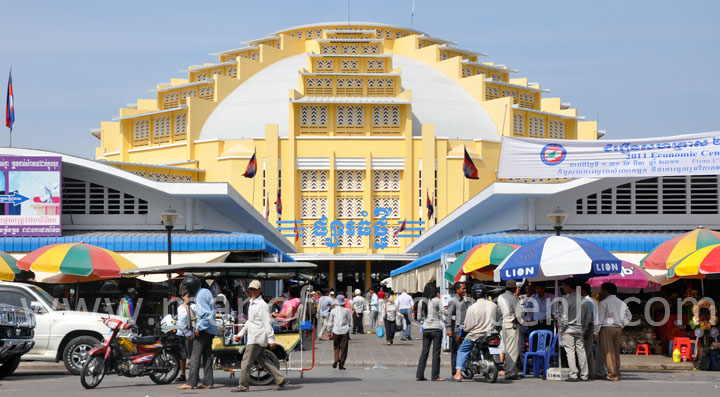
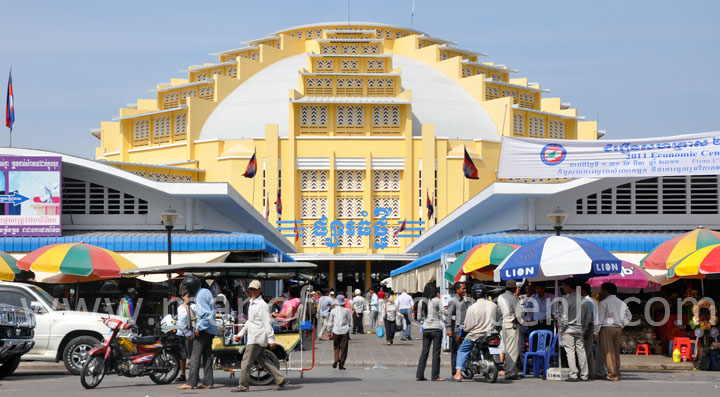

Phnom Penh (/(pə)ˌnɒm ˈpɛn, ˌpnɒm -/;[5][6][7] Khmer: ភ្នំពេញ, romanized: phnum pɨñ, IPA: [pʰnʊm ˈpɨɲ]; literally "Penh's Hill"), formerly known as Krong Chaktomuk Serimongkul (Khmer: ក្រុងចតុមុខសិរីមង្គល, lit. 'City of the Brahma's Faces') or shortly known as Krong Chaktomuk (Khmer: ក្រុងចតុមុខ),[8] is the capital and most populous city in Cambodia. Phnom Penh has been the national capital since French colonization of Cambodia, and has grown to become the nation's economic, industrial, and cultural center.
Once known as the "Pearl of Asia," it was considered one of the loveliest French-built cities in Indochina[9] in the 1920s. Phnom Penh, along with Siem Reap and Sihanoukville, are significant global and domestic tourist destinations for Cambodia. Founded in 1372, the city is noted for its historical architecture and attractions. It became the national capital in 1434 following the fall of Angkor, and remained so until 1497.[10] It regained its capital status during the French colonial era in 1865. There are a number of surviving colonial-era buildings scattered along the grand boulevards.
On the banks of the Tonlé Sap, Mekong, and Bassac Rivers, Phnom Penh is home to more than 2 million people, approximately 14% of the Cambodian population.[3] The Phnom Penh metropolitan area includes 5 districts of Kandal Province.[11]